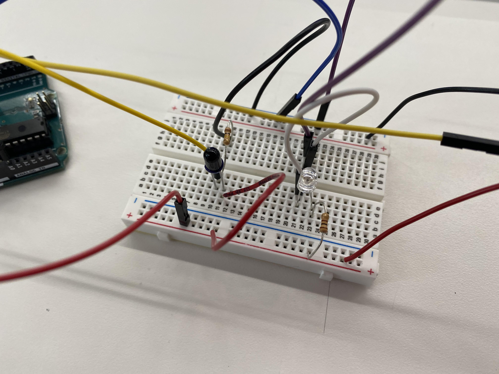

<br>
<h1>Week 6: Input Devices</h1>
<h2>Infrared Transmit-receive (proximity)</h2>
<br>
<div>
<p>
For this week's class we learned about electronic input devices, which are primarily sensors that can register various types of physical activity from the environment.
Since my final project will require a form of proximity detection that can sense the presence of human motion to activate a series of mechanical flower lamps,
I decided that an infrared (IR) transmit-receive device would be the most suitable for this purpose. This sensor depends on two fundamental components: an IR LED Transmitter,
and an IR Photoresistor Receiver. Depending on how we program our device, we set it to execute a response based on whether it detects the presence or absence of IR light.
For example, a break in the signal may be used as a form of trip-wire to detect when something has crossed in the path of our beam. We can also use IR light to send
signals to our device, which is a universal implementation found in television remote controls. Using reflection and triangluation, IR can also be used to detect the distance
of an object.
</p>
<p>
After reading some information on the application of IR in remote control devices, I thought it would be an interesting project to see how input could be read from my TV remote using an IR Phototransistor receiver.
I initially followed the class's tutorial on creating a Tx-Rx (transmitter-receiver) IR device, as well as the previous student example from Silvia. The circuit I created is pictured here:
</p>
<p>

<br>
Interestingly, although the naked human eye cannot detect IR light, the light <i>can</i> can be detected through a smartphone camera,
which at times assisted with debugging.
</p>
<p>
I explored the various issues relating to IR Tx-Rx devices, such as those related to ambient lighting. I also found that the emitted light from the LED is not distributed envely across the bulb,
but that the point of emission appears most strongly from the topmost position of the bulb. Similarly, the phototransitor receiver appears to detect IR signals most strongly from the same point.
Thus the signal is strongest when the two bulbs points are pointed directly at each other. I experimented with various ways of altering the light by placing it in a backpack to isolate the Tx-Rx
system. This did not appear to alter the signal at all. What I found was that because the source of light radiation is centralized, it responds best to metallic reflection of the beam, rather than
by attempting to capture the ambient rays.
</p>
<p>
In addition to measuring the power of the IR signal when reflected from a metallic steel surface, I also measured IR transmission signal levels coming from my TV remote control when using different buttons on the remote.
For this purpose I set the receiver and metallic plate or remote at a fixed distance from each other and recorded the numbers displayed on the serial monitor. I recorded the readings displayed for different button presses,
as well as the power of the reflected signal as the plate was positioned at different distances from the IR Tx-Rx.
</p>
</div>
<div>
<h2>Ultrasonic Distance Sensor</h2>
<img src="https://cdn.sparkfun.com/r/300-300/assets/parts/1/1/6/6/8/13959-01a.jpg" class="center">
<p>
Next I experimented with the ultrasonic distance sensor, HC-SR04. I followed
<a href="https://learn.sparkfun.com/tutorials/sparkfun-inventors-kit-experiment-guide---v40/circuit-3b-distance-sensor"> this guide</a>
from Sparkfun to familiarize myself with its functionality and how to get it up and running. The distance sensor
operates as a Tx-Rx device by both sending and receiving ultrasonic signals through a speaker and microphone. By calculating
the time difference between the pulses, we can determine the distance of an object by halving the bounce time and multiplying by
the speed of sound. I measured the inputs using the serial monitor's print statements and a ruler to make sure the two were in alignment.
The sensor appears faulty at extremely short distances under 3 inches. The signal is also imperfect and vulnerable to minor fluctuations,
of signal noise. Even when the sensor is at rest, When an object was measured to be 60 inches away, the sensor would read values within
the ranges of 59.57 to 60.73, so that the margin of inaccuracy is around 1 inch.
</p>
</div>